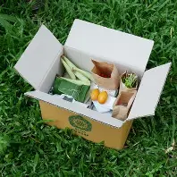
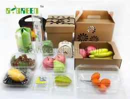
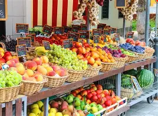

Our Services
At EcoFresh Organics, we do more than just sell organic products — we make healthy living easier and more sustainable through our services.
🚚 Home Delivery
Get fresh organic produce delivered straight to your doorstep. Choose from flexible weekly or monthly delivery plans to fit your lifestyle.
♻ Eco-Friendly Packaging
We care about the planet as much as we care about your health. All our products are packed in recyclable, biodegradable, and compostable materials.
👩🏫 Healthy Living Workshops

Join our community events and workshops where experts share tips on nutrition, eco-friendly lifestyles, and sustainable farming practices.
🤝 Farmer Support Program
We partner with local farmers by providing fair trade opportunities and training in organic farming methods, ensuring a sustainable food chain.